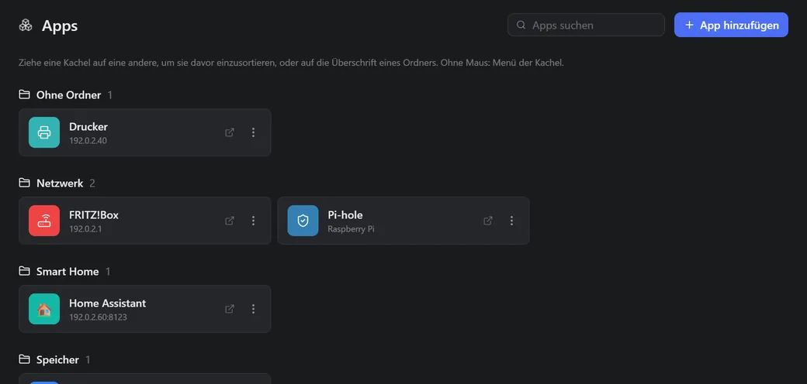

A homelab dashboard for everything you run
Nodvard Deck brings your servers, VMs, containers, backups and notifications together on one page. You see what is running, what is stuck and what you can do next. It is self-hosted in your home and free for personal use. The interface is in German for now.

What the overview shows
At the top are five numbers you need every day: how many servers are online, how many containers are running, which backups had no run, how many notifications are unread and which actions are waiting for you. Below, Deck lists all servers, VMs and LXC with CPU, RAM, disk and uptime.
On the right is what needs your attention right now, such as an almost full disk or a failed backup. You sort the widgets into groups, collapse each group and move them in edit mode.
Not just looking, also acting
A container is stuck? Restart it. A VM should be running? Start it. Updates are waiting? Apply them. Everything that changes something goes through an approval in Deck: Deck suggests, you confirm. You decide what may run without asking, and every action is written to the log.

A start page for your services
Under Apps, every web interface in your network is a tile, sorted into folders. Deck finds containers with a web interface on your Docker servers on its own, and you add your own apps with an address and an icon.
More about AppsFor beginners and for pros
- You add a server in the interface, also with a username and password. You don’t need a terminal for it.
- You connect Proxmox in one step.
- If you just want to look around, fill Deck with sample data and delete it later with one click.
- The defaults fit most setups. More options are under “Advanced”.
- Deck explains errors in plain words: what happened and what you can do now.
What you need
A machine with Docker and Docker Compose, for example a Raspberry Pi 4 or 5 with a 64-bit system or an x86-64 machine. Idle, Deck uses about 100 MB of RAM. Proxmox is optional: a Pi, a NAS or a few Docker hosts are enough. More in the FAQ.
Try it with sample data
Three commands, then Deck is running. The sample data shows you everything before you add your own servers.